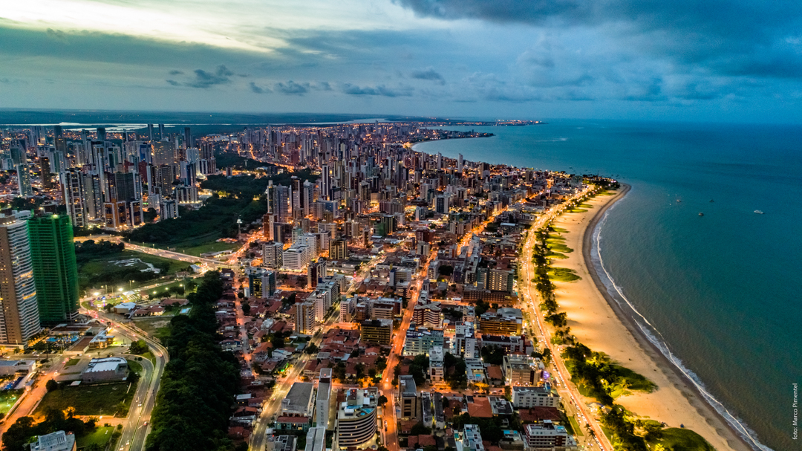
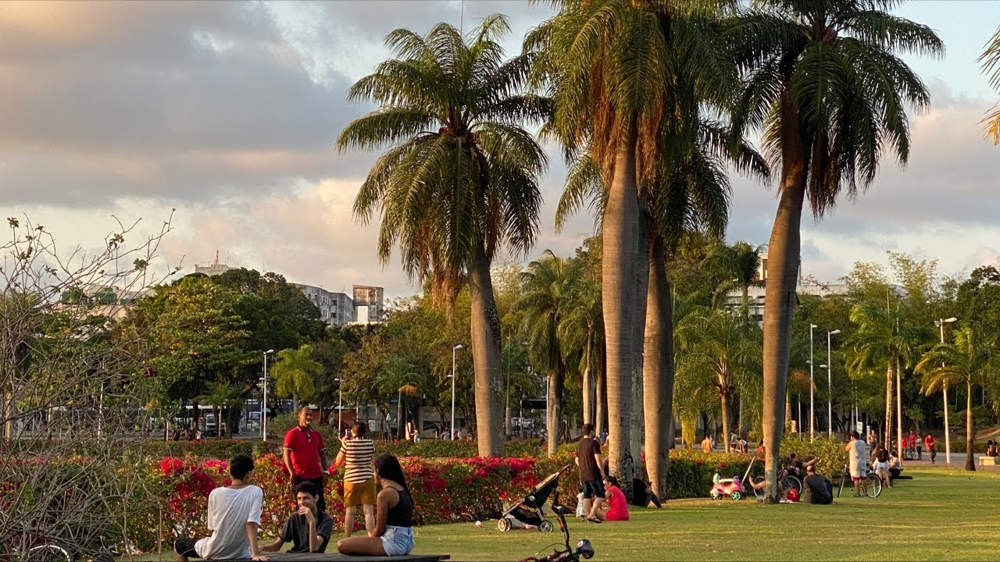

Nascida de costas para o mar, ao contrário das demais capitais do país banhadas pelo oceano Atlântico, João Pessoa foi fundada no dia 5 de agosto de 1585, pelos colonizadores portugueses. Chamada de “Cidade Real de Nossa Senhora das Neves”, suas primeiras edificações foram às margens do Rio Sanhauá, um afluente do Rio Paraíba, hoje conhecido como Porto do Capim, no bairro do Varadouro. Em 1588, a cidade passou a chamar-se “Filipéia de Nossa Senhora das Neves”, em homenagem ao rei Filipe II, que, na época, acumulava os tronos da Espanha e de Portugal. Em 1634, a capital paraibana foi invadida pelos holandeses, que a batizaram de Fredrikstad (Cidade de Frederico), em homenagem ao príncipe de Orange, Frederico de Orange.
Depois do declínio da Nova Holanda e com a saída dos neerlandeses, a cidade adquiriu o nome de “Parahyba do Norte”, em 1654. Sua denominação atual, “João Pessoa”, é uma homenagem ao político paraibano João Pessoa Cavalcanti de Albuquerque, assassinado em 1930, na cidade do Recife, quando era presidente do estado e concorria como candidato a vice-presidente da República, na chapa de Getúlio Vargas.
João Pessoa é uma das capitais brasileiras com melhor qualidade de vida e conhecida pelo verde e por seus espaços para o lazer. Tanto na orla, quanto nos bairros, há áreas para caminhada e prática de esportes. Grande parte das praças da cidade conta com equipamentos de ginástica. Além disso, os ciclistas têm à disposição, várias ciclovias e ciclofaixas.
O município de João Pessoa se encontra no Nordeste do país, às margens do Oceano Atlântico, no litoral do Estado da Paraíba. A cidade é rodeada por zonas naturais, parques, jardins, reservas de Mata Atlântica e um extenso litoral repleto de belíssimas praias protegidas por coqueiros. É conhecida também pela boa infra-estrutura hoteleira, restaurantes e hospitalidade. Considerada uma das cidades mais bonitas do Brasil, possui maravilhoso Centro Histórico, visitado durante todo o ano por milhares de turistas.
